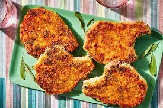

Easy Air Fryer Pork Chops

Description
Put your air fryer to use to make the quickest, crispy and juicy pork chops. You're guaranteed to fall in love with this dish, and you'll never want to cook chops any other way.
Ingredients
- 1/2 cup grated Parmesan cheese
- 1 tsp paprika
- 1 tsp garlic powder
- 1 tsp kosher salt
- 1 tsp dried parsley
- 1/2 tsp ground black pepper
- 4 boneless pork chops
- 2 tbsp extra virgin olive oil
Directions
- Gather your ingredients
- Preheat the air fryer to 380 degrees
- Combine Parmesan, paprika, garlic powder, salt, parsley, and pepper in a shallow dish to create your breading
- Coat each pork chop with olive oil, then dredge both sides of your chops in the breading mix
- Place 2 pork chops in the air fryer at a time and cook for 10 min, flipping halfway through
- Let chops rest at least 5 min before enjoying with your favorite sides